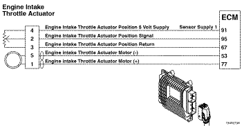

Código de Falha 177
|
| CÓDIGO | RAZÃO | EFEITO |
| Código de Falha: 177 PID: S254 SPN: 3464 FMI: 7 LÂMPADA: Vermelha SRT: |
Atuador do Controle Eletrônico do Acelerador - Sistema Mecânico NÃO Responde ou Fora de Ajuste. O motor do atuador da válvula reguladora de admissão excedeu o limite de ciclo de serviço indicando que o atuador da válvula reguladora de admissão está preso na posição aberta. |
O atuador da válvula reguladora de admissão do motor será desabilitado. |
|
 ISF2.8 CM2220 E - Atuador de Controle Eletrônico do Acelerador
|
O módulo eletrônico de controle (ECM) controla o atuador da válvula reguladora de admissão, abrindo-o e fechando-o com base nas várias condições de operação. O atuador da válvula reguladora de admissão é aberto e fechado por um motor de CC que recebe voltagem do ECM nos circuitos (+) e (-) de sinal do motor do atuador da válvula reguladora de admissão do motor. Para abrir o atuador, o motor recebe voltagem no circuito (+) de sinal do motor do atuador da válvula reguladora de admissão. Para fechar o atuador, o motor recebe voltagem no circuito (-) de sinal do motor do atuador da válvula EGR.
O atuador da válvula reguladora de admissão do motor é montado no fluxo do ar de admissão, entre o arrefecedor ar-ar e o coletor de admissão.
Este diagnóstico é executado continuamente quando a chave de ignição está na posição ON e quando o motor está funcionando.
Este código de falha é ativado quando o ciclo de serviço necessário para abrir o atuador da válvula reguladora de admissão é maior que 95 por cento durante 3 segundos.
O código de falha é desativado quando a chave de ignição é ligada. O código será ativado somente se o atuador da válvula reguladora de admissão do motor for comandado para abrir e o atuador não se mover para a posição comandada.
O ECM acende imediatamente a luz vermelha de parada do motor (STOP ENGINE) e/ou a luz indicadora de falha (MIL) quando o diagnóstico é executado e falha. A operação do atuador da válvula reguladora de admissão do motor será desabilitada.
O ECM monitora o ciclo de serviço do atuador e registra um código de falha se o ciclo de serviço for alto demais. Esta falha é sempre ajustada como inativa quando a chave de ignição é ligada. Se houver uma falha, o código de falha não será ativado até que o atuador tenha sido atuado. Por essas razões, este diagrama de diagnóstico de falhas deve ser utilizado para códigos de falha ativos e inativos.
As possíveis causas desta falha são:
NOTA: Não aplique 12 VCC no sensor de posição do atuador da válvula reguladora de admissão do motor, nem permita um curto entre os fios do motor do atuador da válvula reguladora de admissão e o sensor de posição do atuador da válvula reguladora de admissão . O sensor de posição do atuador da válvula reguladora de admissão tem uma tensão nominal de 5 VCC e poderá ser danificado.
Consulte o diagnóstico do Código de Falha 177.